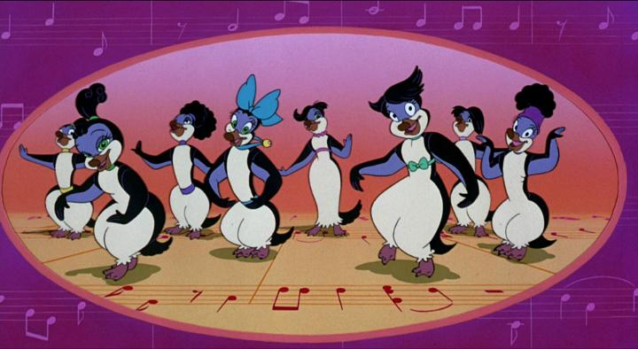

Of all the animated movies Don Bluth directed, "The Pebble and the Penguin" probably has more personal meaning to me the others. Yes, even more than classics like "The Land Before Time" (too childish), "All Dogs Go To Heaven" (too dull) and "An American Tail" (I liked the sequel more). Also, simply because this was one of the only movies of the bunch that I watched as a child, which I watched several times, perhaps due to its perfect release timing in the 90's. A shame that it was panned by critics and had a poor box office release, leading to the closure of Don Bluth's Ireland-based studio - despite a weak story, it's an easy crowdpleaser. One thing that stood out to me is that "Pebble" is a full-out musical, unlike many of Bluth's more popular movies. And it couldn't be more direct about it, opening with penguins singing and dancing around musical notes and bars, with opening credits referencing Barry Manilow for the songs. The rest of the movie plays out like a stage musical, for better or for worse. For better, those songs are quite excellent, helping the movie stand toe-to-toe with some of Disney's other musicals at the time. Another thing is that this featured penguins, long before the cultural popularity of "March of the Penguins" or "Happy Feet," directly inspired by the real-world mating rituals of Adelie penguins (offering rocks to court a life-long mate) and visual designs of rockhopper penguins. As far as cartoons go, it's surprisingly accurate, and a great gateway for children to learn more about the flightless birds. The story is about Hubie, an utterly shy and clumsy penguin with eyes for the beautiful and fair Marina. And being more sensible than most of the other girl penguins, Marina seems to care for Hubie's charm too, if only he'd have the guts to confess. Unfortunately, Drake is set to win Marina's heart too, and just as Hubie works up the courage to offer a pebble from a falling star, Drake shoves him into leopard-seal-invested waters to become fish food. As the rookery mourns for Hubie and Marina keeps pushing back Drake's advances, Hubie wakes up in a fishing boat halfway around the world, and escapes with the loud penguin Rocko to get back to Antarctica. And that's pretty well it. Drake's move against Hubie is evil, sure, but he gets no other opportunity to do anything dasterdly. Tim Curry as Drake chews every scene he's in (complete with a dark red cape), but constantly looks like he's scheming to do... nothing in particular. Hubie's adventure back is full of dangers, but none of which have particular consequence, with a few songs to fill the movie's short runtime. It's simple to a fault, but a simple story with cute and easy one-dimensional characters is all the more appealing to kids. And again, the fun showtunes carry the movie, as long as you don't get easily annoyed by that.  Generally, the movie looks great (and most of the scenes transfer great to Bluray), but there isn't much opportunity for detailed scenery when the backgrounds are endless ocean or ice. Most of the work goes into the choreographed penguins and character animation. Curiously, lip-syncing frequently doesn't match dialogue or lyrics, possibly because the script wasn't written in time for production? The cast is led by Martin Short, Jim Belushi and Tim Curry, each capturing their roles to a T, and Annie Golden as Marina helps sell the girl's beauty from the first moment she's on screen."The Pebble and the Penguin" isn't a great film, but it's an utterly charming one. Honestly, it's still my favourite penguin film to date, which means a lot to anyone who likes penguins... that is to say, everyone.
- "Ani" More reviews can be found at : https://2danicritic.github.io/ Previous review: review_The_Peasants Next review: review_The_Pet_Girl_of_Sakurasou